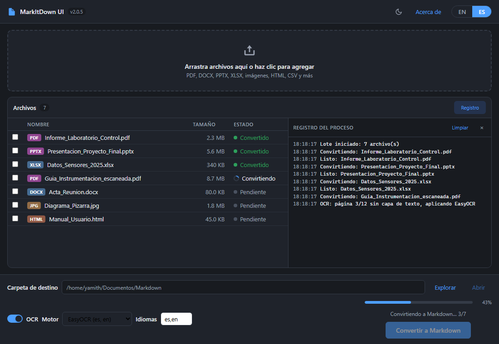
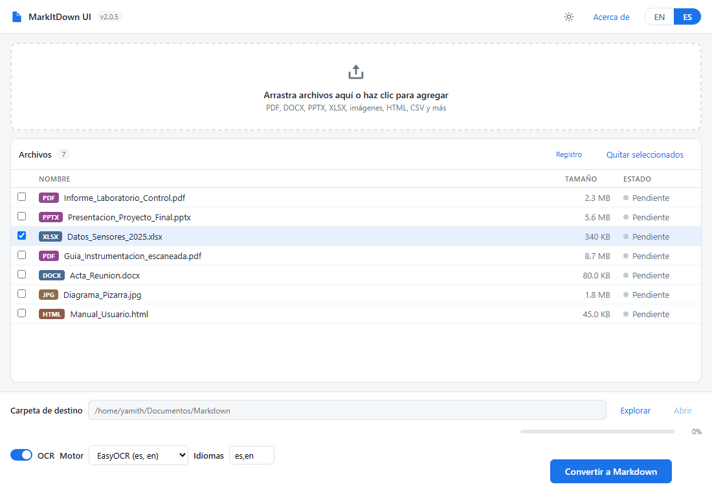
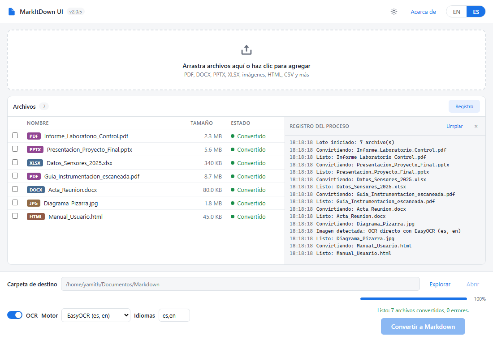
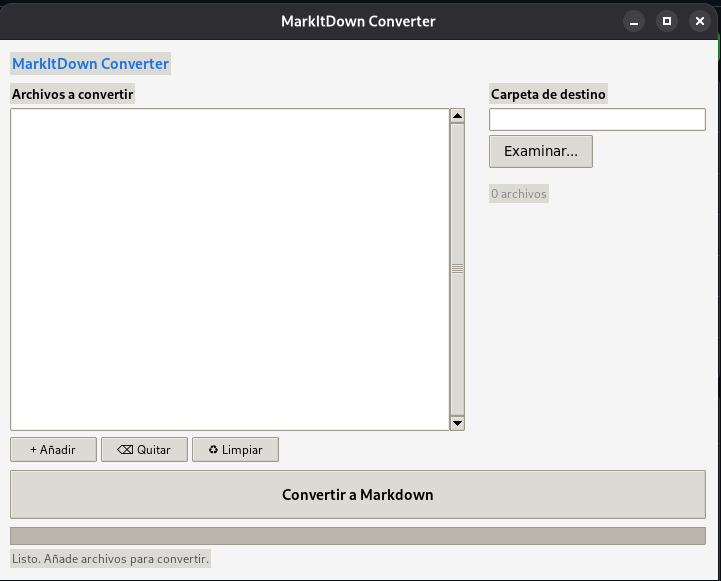

Descripción del Proyecto
Interfaz gráfica de escritorio para MarkItDown, la utilidad de código abierto de Microsoft que convierte documentos a Markdown. Desarrollada inicialmente para Linux Debian y luego llevada también a Windows, permite convertir por lotes archivos PDF, DOCX, PPTX, XLSX, HTML, imágenes y otros formatos arrastrándolos a la ventana, con OCR completamente local para documentos escaneados e imágenes, sin servicios en la nube. La conversión la realiza MarkItDown; la interfaz, el backend de comunicación y la integración del OCR son desarrollo propio.
Objetivos
- Usar MarkItDown sin recurrir a la línea de comandos
- Convertir varios archivos a la vez con arrastrar y soltar
- Extraer texto de PDF escaneados e imágenes sin conexión
- Distribuir la herramienta como paquete instalable
Resultados
- Aplicación Electron con backend Python y estado por archivo
- OCR local con selección automática entre EasyOCR, Tesseract y el integrado de MarkItDown
- Interfaz en español e inglés, con modo claro y oscuro
- Paquetes .deb y AppImage para Linux e instalador para Windows
Galería


